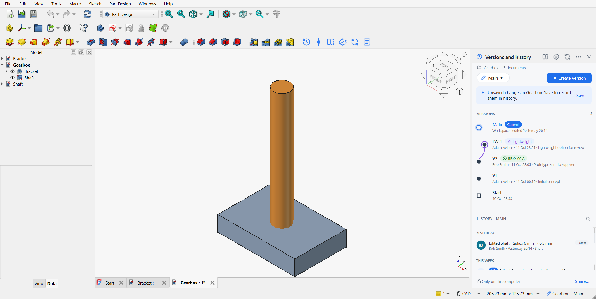

Strata: versions and history for FreeCAD
Strata gives FreeCAD the product data management engineers expect from modern CAD. Every save is recorded and described in plain language, milestones become versions, ideas live in workspaces, and any point in time can be viewed, compared or restored. Git does the storage underneath; you never see it.

What you can do
-
Automatic history
Every save becomes an entry such as Edited Base plate: Length 10 mm → 12 mm. Nobody writes commit messages. -
Versions
Named, permanent snapshots of the whole project for milestones: V2 – Prototype sent to supplier. -
Workspaces
Try a design alternative without touching Main, then merge it back when it is ready. -
Go back in time
Open any point as a read-only copy, or restore it. Restoring never deletes anything. -
Compare
See every feature and parameter that changed, and overlay both states in 3D with the volume change. -
Releases
Part numbers, revision letters, an optional approval step and an obsolete state. -
Team sync
Share through a network folder, a synced drive or any Git server. Works offline. -
Everywhere in FreeCAD
One panel, toolbar, Tools-menu entries and keyboard shortcuts in every workbench, light and dark themes.
Where to start
-
Installation
Requirements and installing with the Addon Manager or by hand. -
Quick start
Turn on version control, save, create a version and go back in time. -
Key concepts
Projects, history, versions, workspaces, releases and sync in one page. -
Tutorials
Step-by-step guides for every task, with runnable examples. -
Keyboard shortcuts
All keys at a glance. -
Python API
Script Strata or build it into your own tools.
Why Strata
Strata implements the proposal discussed in the FreeCAD forum thread Proposal for Integrated Version Control in FreeCAD for PLM/PDM Functionality. It answers the objections raised there:
-
History lives beside your files, not inside them, so
.FCStdfiles stay ordinary FreeCAD files. FreeCAD rewrites the archive on every save and drops entries it does not know, so a repository inside the file could not survive. -
A project is a folder, so assemblies and the parts they link to are always versioned together.
-
Geometry stored as BREP text is versioned too, so imported solids such as STEP imports restore exactly.
-
It works completely offline; a server is only needed if you choose to share.
-
The engine has no FreeCAD or Qt dependency, so it can be scripted and connected to other systems.
Strata is free software under the LGPL-2.1-or-later, the same licence as FreeCAD.